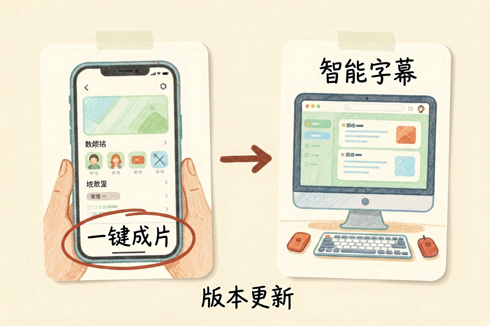
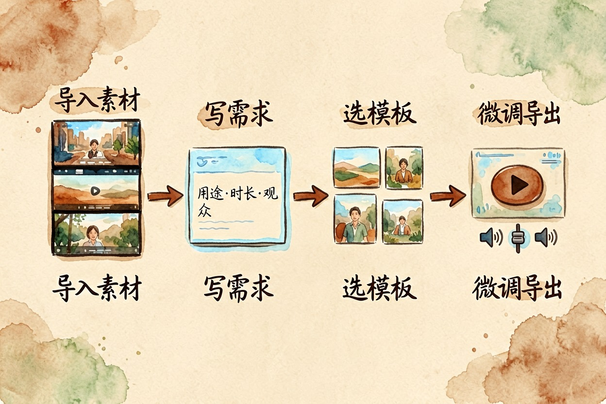
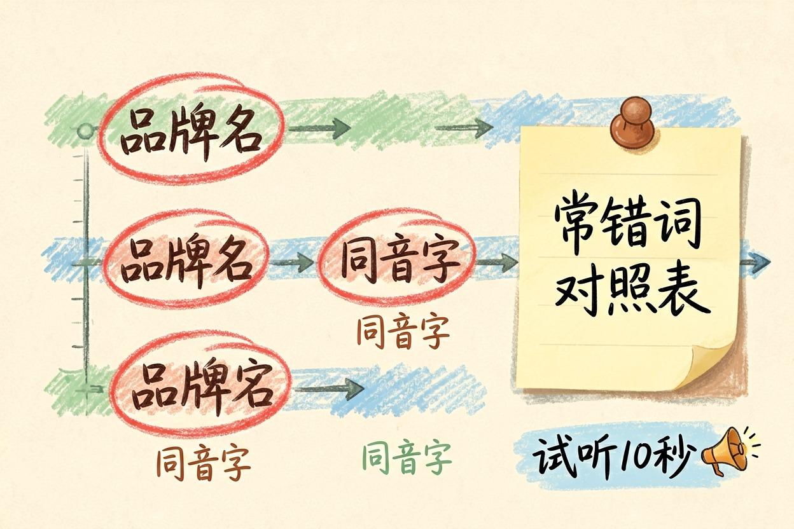
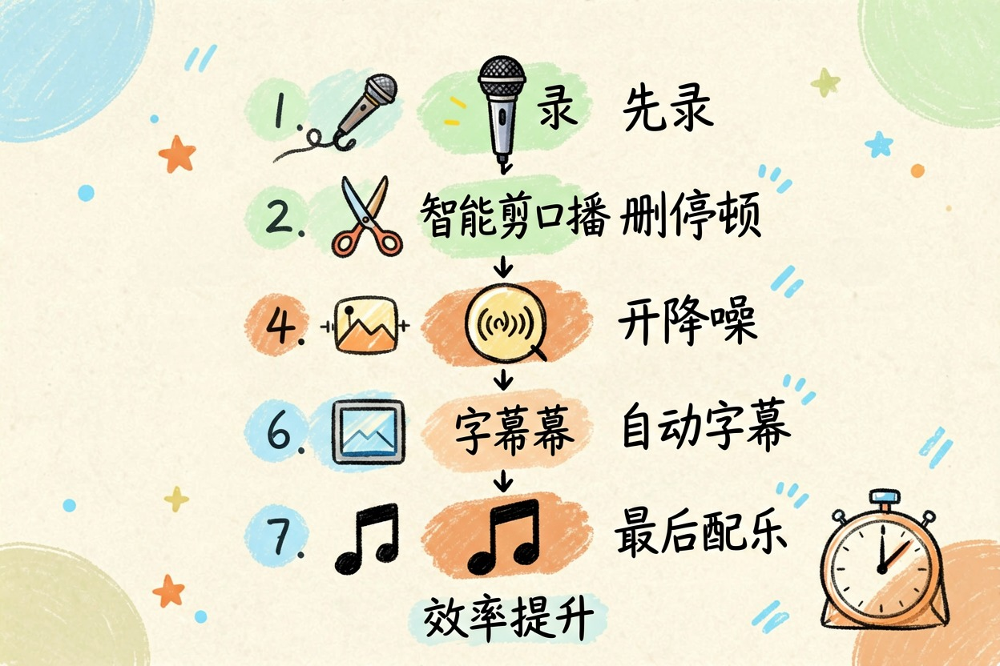

剪映 AI 怎么用？从智能成片到自动字幕
同一套功能，手机上叫一键成片，电脑上藏在别处，不少人卡在找入口这一步就放弃了。
剪映 AI 怎么用？手机端和电脑端入口不一样

剪映 AI 第一个坎往往不在操作，而在找不到按钮。手机版和电脑版入口位置、叫法都对不上，照着混讲的教程点只会更迷糊。
手机端在首页那排大按钮里找"一键成片""图文成片"。进剪辑界面后，AI 能力散在底部的"文本""音频""剪同款"里。
电脑专业版：主战场是顶部菜单和右侧属性面板，字幕在"文本—智能字幕"，成片在模板区。
按钮不见了，逃不过三个原因：版本太旧、账号没登录或地区不匹配、功能还在灰度。先更版本、退登重进，八成能解决，剩下换另一端试，版本以剪映官网为准。
智能成片四步走

第一步导入素材，宁多勿少，横竖屏尽量统一。素材不够就先用 AI 生成几段空镜补上，对照素材不够时用 AI 生成视频。
第二步把需求说清楚，这步决定成片质量。多数人只填"做个产品介绍"，出来自然是模板味。换成这种结构：
用途：小红书种草短视频
时长：45 秒以内
观众：25-35 岁女性
风格：轻松口语，不要广告腔
必须出现：产品名 XX，三个卖点（补水、不粘腻、便携）
结尾：引导点主页链接第三步选模板。别挑推荐位最靠前的，撞车严重。往下翻，找节奏和素材时长对得上的。
第四步微调导出：开头三秒换最抓人的画面，重复镜头删掉，音乐压到人声下。
自动字幕与文本朗读的校对要点

识别、校对、样式，顺序别乱。
识别很快，麻烦在校对。三类词必改：品牌名与型号、行业术语、同音字。阿玫每条都把"经华"改回"精华"。省事办法是备一张常错词对照表，导出前批量替换。
文本朗读适合不想出镜的口播。音色选完先试听十秒，重点听数字和英文，机器音在这两处最容易露馅，参看AI 配音工具对比。
样式最后调。竖屏字号别太小，描边和底色至少留一样，否则画面一亮字就没了。
口播视频的专用流程

口播和混剪完全不同，套一键成片只会更慢。顺序应该是：
先录，说错停两秒重来。录完用"智能剪口播"，停顿和重复片段会被自动标出，你确认删除即可。
接着开人声增强和降噪，再上自动字幕，最后配乐转场。反过来做，中间删一句话，后面全乱。
老周原先剪一条八分钟口播要两个多小时，换这个顺序后压到四十分钟。
三个常见翻车，以及免费能走到哪一步
- 素材被判"不合格"：多半画面太暗或抖得厉害，先手动调亮度再导入。
- 只传一段长视频：智能成片靠在多段素材间找节奏，至少切成五到八段。
- 模板感太重：换掉字幕样式、删一半转场、配乐挑个不常见的。
免费能走到哪一步？剪映官网的功能划分和会员权益一直在调（哪些值得用、哪些别碰，看剪映 AI 哪些功能值得用），导出分辨率、部分 AI 能力都可能是分界线。卡人多在导出画质和水印。掏钱前先免费跑通整条流程，看卡在哪再决定。
最后提醒一句：剪映 AI 怎么用都好，出片前一定自己完整看一遍，不要让识别错的字幕和跑偏的节奏替你说话。
本文信息核对于 2026-08-05。AI 产品的价格、免费额度与功能变动频繁，实际以各工具官网当前说明为准。